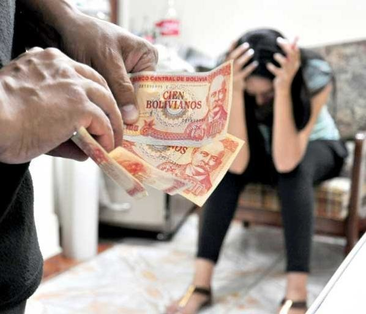
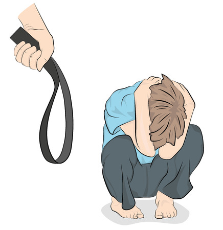

SIN VIOLENCIA
Violencia económica Es el poder que se ejerce contra las mujeres para hacerlas dependientes económicamente de los hombres; cuando se controla o limita sus ingresos económicos y la disposición de los mismos, o cuando se las priva de los medios indispensables para vivir.
Factores
• Dependencia económica de una persona sobre otra.
• Desigualdad en el acceso a los recursos económicos entre hombres y mujeres.
• Relaciones de poder desiguales en el ámbito familiar o de pareja.
Causas
• Desigualdad económica
• Desigualdad en el acceso a los recursos económicos entre hombres y mujeres.
• Control y restriccion de recursos
•Abuso de posecion dominante
Violencia psicológica
: La violencia psicológica es un tipo de violencia que se ejerce sin contacto físico y que conlleva a la desvalorización y buscan disminuir o eliminar los recursos internos que la persona posee Se puede dar por una o más personas a la vez y se manifiesta básicamente de forma verbal: descalificativos, humillaciones, desvalorizaciones, menosprecios, entre otros Estas conductas ocasionan daño en la víctima a nivel emocional y pueden darse en todos los alrededores: familiar, escolar, social, laboral, entre otrosCausas de la violencia psicológica
• Inseguridad y problemas sociales
• Alcoholismo y adicciones
• Ignorancia y desconocimiento
• Educación deficiente
• Desequilibrio de poder
 Violencia física
Violencia física
La violencia física es aquella acción generada de manera voluntaria y que por lo mismo ocasiona daños no accidentales, utilizando la fuerza física o algún tipo de armamento u objeto que pueda causar o no lesiones. Este tipo de violencia tiene como fin fundamental generarun impacto directo en el cuerpo y consecuencias físicas tanto externas como internas,Es una forma de control, intimidación y agresión al cuerpo de otra persona y puede hacerse a través de contacto directo con el cuerpo (golpes, rasguños, jalones,) o bien, mediante limitación del movimiento
